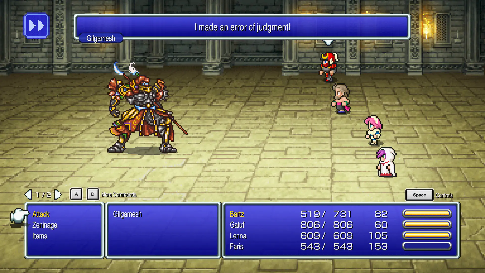
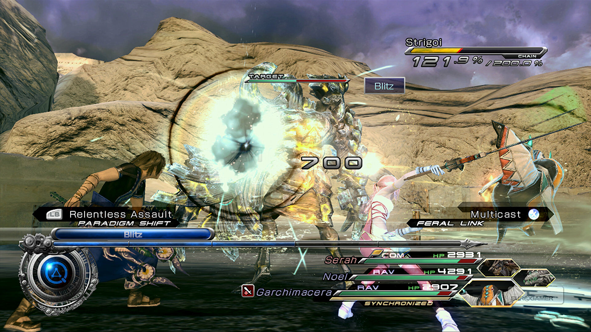
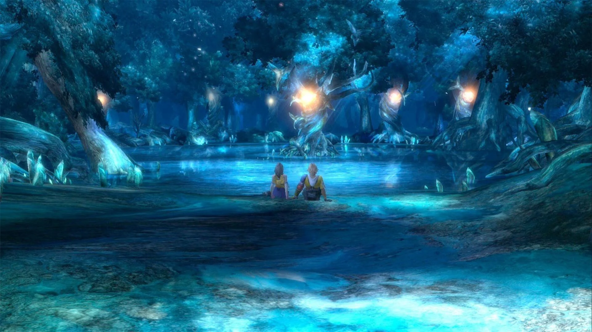
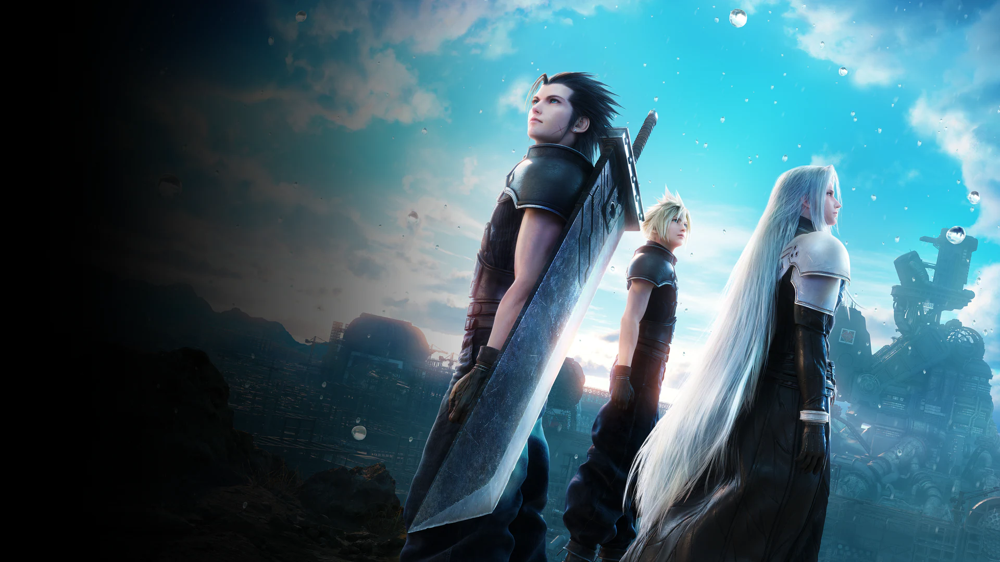
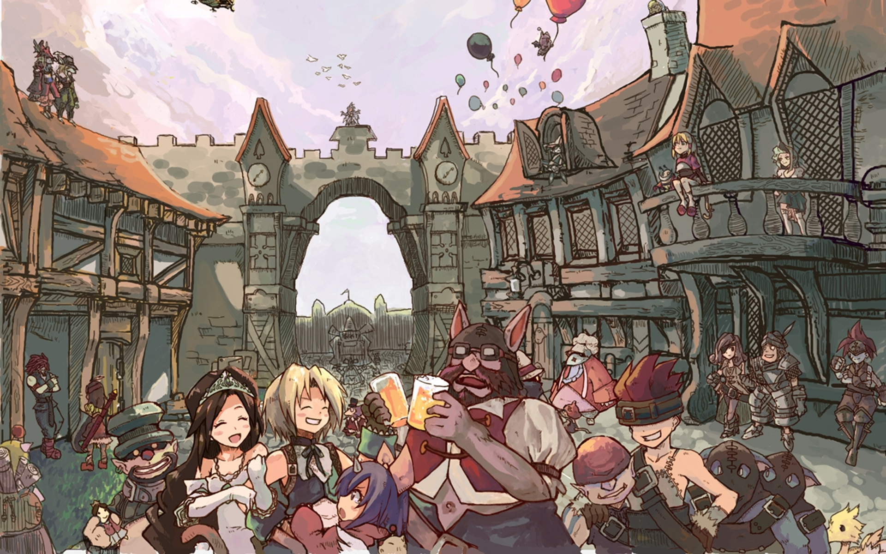

5
Final Fantasy V
voto:8
Nel regno di Tycoon il re è allarmato dal vento che, in quei giorni, si sta indebolendo. Decide così di recarsi, con il suo drago Hiryuu, al santuario dove è custodito il cristallo del vento, lasciando al castello la figlia Lenna con il timore che le accada qualcosa.
La principessa si dirige verso il santuario quando, poco lontano da lei, cade un meteorite. Il meteorite in realtà è cavo ed al suo interno si trova Galuf, un vecchio originario di un altro mondo venuto per avvisare tutti di un pericolo imminente; purtroppo, nell'impatto, perde la memoria. Lenna e Galuf sono soccorsi da Bartz, un girovago, accompagnato dal suo chocobo, Boko.
Bartz e Galuf decidono di seguire la principessa, finché lo stuoletto non capiterà in un nascondiglio di pirati; essi vagheggiano di rubare una nave che riesce a navigare senza vento ma, scoperti dai pirati, vengono imprigionati. Subito dopo verranno liberati dal capitano Faris (in realtà femmina), la quale segue il terzetto fino ad arrivare al santuario del vento dove, però, accade la tragedia: il cristallo del vento lì custodito si frantuma, uccidendo il padre di Lenna, ma consacrando i quattro al loro destino, ovvero divenire i nuovi guerrieri della luce; essi ricevono dai frammenti del cristallo il potere degli antichi guerrieri.
Il quartetto viaggia in cerca degli altri tre cristalli per sviarne la frantumazione. Durante il loro viaggio gli eroi scoprono che i cristalli sono collegati a macchine che ne amplificano il potere ma, al contempo, lì indeboliscono. Nel "Regno del Fuoco" il gruppo sale sulla nave del fuoco ed incontra il costruttore di tali macchine: Cid.
Nel "Regno dell'Acqua" salgono sulla torre di Walz, e si recano nella città volante per raggiungere il cristallo della terra, ma in tutti e tre i casi non avranno successo, condannando il pianeta alla morte. Vicino ad ogni cristallo avviene sempre la caduta di un meteorite, infittendo così il mistero.
Dopo di ciò Galuf recupera la memoria, ricordandosi di essere il re di un altro mondo, e correrà a casa sfruttando il potere delle meteoriti. I suoi tre amici lo seguono e svelano molti misteri: i quattro cristalli servivano, oltre che per fornire i quattro elementi all'esistenza, come sigillo a uno stregone malvagio, Ex Death, cui ordì un progetto per annientare i cristalli e sprigionare il suo potere.
Inizia così una guerra tra l'esercito del malvagio stregone e l'esercito di Galuf, che si concluderà, grazie al sacrificio di alcuni guerrieri dell'alba (gli antichi guerrieri che sigillarono Ex Death, di cui fa parte anche Galuf, che morendo successivamente lascerà il suo posto alla nipotina Crile), con l'intrusione nella base nemica e la sconfitta di Ex Death, che distruggerà anche i cristalli dell'altro mondo, facendo così in modo che i due pianeti si riunissero nella loro forma originale.
A questo punto lo stregone otterrà il potere del “Void”, il “Vuoto”, minacciando di distruggere l'esistenza stessa. I quattro guerrieri della luce porranno fine ai suoi piani grazie a incantesimi e armi antiche ottenute in un difficoltoso viaggio.
Divertente

4
Final Fantasy XIII
voto:8+
La storia si svolge nel regno di Cocoon, una sorta di monarchia di stampo ecclesiastico. Il primarca, massima autorità politica e religiosa del regno, ha il compito di interpretare il volere delle misteriose divinità denominate fal'Cie (pron. "far-shì"); le guardie del suo governo, il Sanctum, vengono chiamate PSICOM. Un altro tipo di guardia, il CG (Corpo di Guardia), si affianca agli PSICOM, ma ha autorità solo locale, ed è generalmente poco considerata dal Sanctum. Sotto Cocoon si estende il mondo di Gran Pulse, abitato da creature mostruose e dominato da fal'Cie ostili.
Ogni fal'Cie ha poteri di controllo elevati sugli umani: in particolare, ognuno di questi esseri fornisce un certo tipo di risorsa agli umani, che dipendono quindi quasi totalmente da essi. Inoltre hanno la capacità di nominare (fal'Cie del Sanctum) o maledire (fal'Cie di Pulse) gli umani, trasformandoli in l'Cie (pron. "ru-shì"). I l'Cie sono esseri umani in grado di usare la magia, ai quali viene dato il compito di svolgere particolari missioni molto pericolose: se falliranno, si trasformeranno in Cie'th (pron. sieth), creature simili a non-morti; se invece avranno successo si trasformeranno in statue di cristallo e vivranno eternamente. Se si considera che le missioni non sono esplicate ma si riceve solo una visione sfuggente, si comprende la difficoltà dell'impresa. Inoltre sul corpo del l'Cie compare uno stigma, che più si espande e si colora, e meno tempo si ha a disposizione per compiere la missione imposta dal fal'Cie. Nonostante si consideri come un eroe un l'Cie del Sanctum e come un nemico pubblico un l'Cie di Pulse, essere maledetti da un fal'Cie, e quindi portarne il marchio come un tatuaggio, è considerata da alcuni come una vera e propria sciagura, visti anche gli unici due destini possibili sono simili alla morte. Molti fal'Cie traggono i loro nomi da evocazioni o da nemici dei precedenti Final Fantasy.
Complesso

3
Final Fantasy X
voto:9-
Nella florida metropoli di Zanarkand un giovane campione di blitzball, di nome Tidus, entra in contatto con Sin, un'entità malvagia, e si ritrova mille anni nel futuro nell'apparentemente quieto mondo di Spira. Qui, dopo lo spaesamento iniziale, fa la conoscenza di nuovi amici: Wakka, capo di una fallita squadra di blitzball (lo sport nazionale), Lulu, zelante maga nera, Kimahri, membro della razza Ronso e ripudiato dai propri simili, Rikku, di razza Albhed e cugina di Yuna, e Auron sua vecchia conoscenza in quanto amico del padre, scomparso molti anni prima. Si tratta di cinque guardiani, guardiani dell'invocatrice del posto. Spira è infatti condannata alla sofferenza eterna da un'entità malvagia, denominata Sin, che compare periodicamente per seminare morte e distruzione; solo l'invocazione suprema può placare la sua ira ed è richiamabile dagli invocatori al termine di un lungo e faticoso pellegrinaggio durante il quale vengono supportati e aiutati dai guardiani e dalle invocazioni minori. L'invocazione suprema prevede il sacrificio dell'invocatore che la esegue. La sconfitta di Sin dà inizio ad un periodo di calma e felicità denominato "Bonacciale" che dura circa 1 anno, durante il quale Sin non comparirà.
Commovente

2
Final Fantasy VII: Crisis Core
voto:9
Il mondo è governato dalla potente compagnia elettrica Shinra, che domina con il suo monopolio sull'energia mako, una fonte di energia raffinata direttamente da flusso vitale del pianeta. La Shinra ha la sua base a Midgar, una megalopoli alimentata da otto reattori mako, e la governa incontrastata dal palazzo Shinra. Grazie al suo monopolio, la Shinra ha in mano praticamente tutto il mondo, eccetto la remota nazione di Wutai, che ancora resiste: da diversi anni, l'esercito privato della Shinra e le armate di Wutai sono in guerra, e la compagnia si è portata in vantaggio grazie alle sue innovative macchine da guerra e alla loro élite militare, i SOLDIER.
Il corpo dei SOLDIER è guidato da tre figure leggendarie, i 1ª classe, la più famosa delle quali è Sephiroth, primo tra i SOLDIER e il più potente mai esistiti. La storia inizia al termine della guerra di Wutai, ed è vista con gli occhi di un giovane SOLDIER 2ª classe di nome Zack Fair.
Devastante

1
Final Fantasy IX
voto:9 1/2
Nella città di Alexandria fervono i preparativi per il 16° compleanno della principessa Garnet, figlia della regina Branhe. Per l’occasione è stata scritturata una compagnia di attori, affinché celebri la ricorrenza con un’opera teatrale;in realtà, si tratta di un gruppo di banditi, tra i quali anche il protagonista, Gidan (un ragazzo con la coda da scimmia, completamente ignaro del proprio passato), che mira a rapire la stessa principessa. Sin dall’inizio, però, il rapimento non va come previsto: Gidan scopre che in realtà Garnet desidera essere rapita, in quanto vuole scoprire la causa di alcuni strani comportamenti della madre; e anche la fuga da Alexandria si rivela difficoltosa, tanto che l’aeronave dei banditi, sulla quale sono stati fortuitamente imbarcati anche Vivi, un timido mago nero, e il capitano delle guardie addetto alla sicurezza della principessa, Adalberto Steiner, precipita poco oltre i confini della città. Incolumi, Gidan, Vivi, Steiner e Garnet si trovano a dover fronteggiare i servitori inviati da Branhe per recuperare la figlia ribelle (anche con metodi poco ortodossi…)
Magnifico
